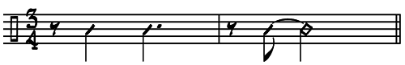

What could actor/singer Julie Andrews and saxophonist John Coltrane possibly have in common?
Answer:
They both loved to perform the song “My Favorite Things” from the Richard Rodgers and Oscar Hammerstein musical “The Sound of Music.”The musical “The Sound of Music” opened on Broadway in November of1959 with actor Mary Martin playing the lead role of Maria. The production won four Tony Awards. When the musical was made into a film in 1965, Julie Andrews played Maria. The film went on to win five Oscars, including Best Picture that year. Let’s watch and listen to Ms. Andrews sing “My Favorite Things” to a bed full of children who have been frightened by a storm. You can watch the melody go by as you listen. The form is A (minor) - A (minor) - A (major harmony, same melody as the first two A sections) - B
View the melody for My Favorite Things (pdf)
Watch a performance of My Favorite Things from "The Sound of Music".
Less than a year after “The Sound of Music” started on Broadway, John Coltrane along with McCoy Tyner on piano, Steve Davis on bass and Elvin Jones on drums recorded the now classic version of “My Favorite Things” on October 21, 1960. Here’s a short chip from a German television show in 1964.
Watch a performance of My Favorite Things by the John Coltrane Qunitet.
"My Favorite Things" is in triple meter and was not normally the type of song with which jazz musicians would choose to work. However, pianist McCoy Tyner said that "it was a song_plugger, I think, who brought us the sheet music [of "My Favorite Things"] at the Jazz Gallery.
I didn't like the tune at first but John did, so we started playing it and it began to grow on me. The audience really liked it, the way we played it in three-quarter time. It was probably the only jazz waltz they'd ever heard since Sonny Rollins' 'Valse Hot.' So John decided to record it on his next album" (Thomas [n.d.],133).
Coltrane and his quartet were soon in the studio in October of 1960 and recorded enough material for three albums: My Favorite Things, Coltrane Plays the Blues, and Coltrane's Sound. Propelled by the title track, the album My Favorite Things sold more than 50,000 units during its first year, which was ten times that of a standard popular jazz album. It was a jazz hit.
"My Favorite Things" was recorded with Coltrane on soprano sax, McCoy Tyner on piano, bassist Steve Davis, and Elvin Jones on drums. The song is a waltz, or quicker-paced triple meter dance. It features 16 measure sections of the theme or tune of "My Favorite Things" sounded between longer passages of improvisation.
The improvisational passages are based on two different modes: E Major and E Dorian. These, in turn, are spun out into a two chord modal accompanimental pattern (minor ninth chords on E and F#) by pianist McCoy Tyner.
E Major and E Dorian modes share common elements, yet distinct differences remain with Dorian having lowered 3rd, 4th, and 7th scale degrees compared to Major.
W W H W W W H
E Major: E F# G# A B C# D# E
E Dorian: E F# G A B C# D E
W H W W W H W
The alternation between the tune and modal section of improvisation was infinitely expandable. Coltrane extended his three choruses into a near fourteen minute performance in My Favorite Things (1960). On Afro Blue Impressions (1963) he recorded the song again in a performance of twenty-two minutes and there was even a three hour live performance of the song played without a break.
The tempo of "My Favorite Things" moves rapidly and it is easy to hear the triple meter as a single ONE consisting of three beats. Listen closely for pianist McCoy Tyner’s alternation between two chords as he comps. Note, too, the repetitive and drone-like bass line and in the Intro the ostinato that the rhythm section sets up and is used, with slight variations, throughout the piece.

In the second chorus, McCoy Tyner’s solo is played in a very pianistic and chordal style, rather than in a single note, horn-like line. His voicing of chords in fourths influenced many pianists that came after him.
In contrast to Tyner’s approach, Coltrane’s solo in the third chorus is filled with rapid, scalar passages that demonstrate not only incredible virtuosity, but also a knowledge and command of harmony that no jazz player at the time had even begun to approach. Coltrane’s influence is still being felt today over thirty-five years after his death.
Follow the Listening Chart, below, and listen to the John Coltrane Quartet's "My Favorite Things" (1961).
Intro
0:00-0:09 16 mm Rhythm section introduction
0:09-0:18 Rhythmic ostinato feel is set up. It’s used with slight alterations throughout the piece.
1st chorus: Coltrane, soprano sax
0:18-0:35 16 1st A section (E Dorian)
0:35-0:44 8 Rhythm section improvised interlude (E Dorian)
0:44-1:01 16 1st A section again (E Dorian)
1:01-1:27 16 Harmony shifts to E major – Coltrane improv
1:27-1:44 16 B section of melody – the bridge – highly embellished
1:44-2:01 16 Coltrane play letter A again rather than the last 24 bars of the melody
2:01-2:18 16 E Dorian improv
2nd chorus: McCoy Tyner, piano
2:18-2:35 16 1st A section (E Dorian)
2:35-3:08 32 E Dorian improv
3:08-3:25 16 1st A section (E Dorian)
3:25-5:57 148 E Major improv
5:57-6:13 16 segment of Theme
6:13-6:46 32 E Dorian improv
6:46-7:02 16 1st A section (E Dorian)
3rd chorus: Coltrane, soprano sax
7:02-7:10 8 E Dorian improv
7:10-7:27 16 1st A section (E Dorian)
7:27-9:43 136 E Dorian improv
9:43-10:00 16 1st A section (E Dorian)
10:00-12:17 136 E Major improv
12:17-12:33 16 B section of melody – E major
12:33-12:50 16 C section of melody - last bars of the song in E minor rather than in E major12:50-out 33 Coltrane, solo
Coda
12:50-out 33 Coltrane, solo